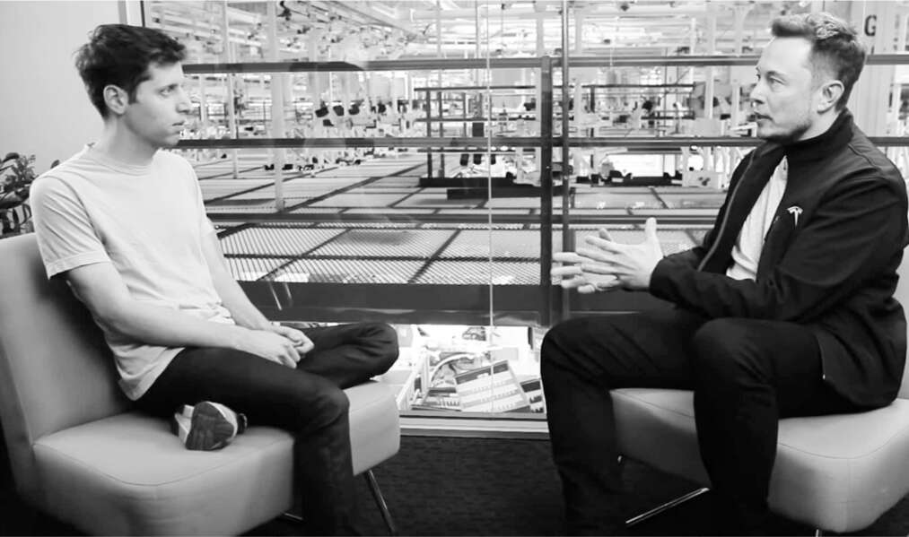

Peter Thiel, người đồng sáng lập PayPal, người đã đầu tư vào SpaceX, tổ chức một hội nghị hàng năm với các nhà lãnh đạo của các công ty được tài trợ bởi Quỹ Founders Fund của ông. Tại buổi họp mặt năm 2012, Musk đã gặp Demis Hassabis, một nhà thần kinh học, nhà thiết kế trò chơi điện tử và nhà nghiên cứu trí tuệ nhân tạo với phong thái lịch sự che giấu một đầu óc cạnh tranh. Là một thần đồng cờ vua năm bốn tuổi, ông đã năm lần vô địch Thế vận hội Thể thao Trí tuệ quốc tế, bao gồm các cuộc thi cờ vua, poker, Mastermind và backgammon.
Trong văn phòng hiện đại ở London của mình có một ấn bản gốc của bài báo năm 1950 của Alan Turing, "Máy tính và Trí tuệ", đề xuất một "trò chơi bắt chước" sẽ đặt con người đối đầu với một cỗ máy giống như ChatGPT. Nếu câu trả lời của cả hai không thể phân biệt được, ông viết, thì có thể nói rằng máy móc có thể "suy nghĩ". Bị ảnh hưởng bởi lập luận của Turing, Hassabis đồng sáng lập một công ty có tên là DeepMind, tìm cách thiết kế các mạng lưới thần kinh dựa trên máy tính có thể đạt được trí tuệ nhân tạo tổng quát. Nói cách khác, nó tìm cách tạo ra những cỗ máy có thể học cách suy nghĩ giống như con người.
"Elon và tôi đã nhanh chóng thân thiết, và tôi đã đến thăm anh ấy tại nhà máy tên lửa của anh ấy", Hassabis nói. Khi ngồi trong căng tin nhìn xuống dây chuyền lắp ráp, Musk giải thích rằng lý do anh ấy chế tạo tên lửa có thể lên sao Hỏa là vì đó có thể là một cách để bảo tồn ý thức của con người trong trường hợp xảy ra chiến tranh thế giới, thiên thạch va chạm hoặc nền văn minh sụp đổ. Hassabis đã thêm một mối đe dọa tiềm tàng khác vào danh sách: trí tuệ nhân tạo. Máy móc có thể trở nên siêu thông minh và vượt qua chúng ta, những người bình thường, thậm chí có thể quyết định loại bỏ chúng ta. Musk im lặng gần một phút khi anh xử lý khả năng này. Trong những khoảng thời gian xuất thần như vậy, ông nói, ông chạy các mô phỏng trực quan về cách nhiều yếu tố có thể diễn ra trong những năm qua. Ông quyết định rằng Hassabis có thể đúng về mối nguy hiểm của AI và ông đã đầu tư 5 triệu đô la vào DeepMind như một cách để theo dõi những gì nó đang làm.
Vài tuần sau cuộc trò chuyện với Hassabis, Musk đã kể cho Larry Page của Google nghe về DeepMind. Họ quen biết nhau đã hơn mười năm, và Musk thường xuyên ở lại nhà của Page tại Palo Alto. Mối nguy hiểm tiềm tàng của trí tuệ nhân tạo trở thành chủ đề mà Musk thường xuyên nhắc đến, gần như ám ảnh, trong những cuộc trò chuyện đêm khuya của họ. Page tỏ ra không mấy quan tâm.
Tại bữa tiệc sinh nhật năm 2013 của Musk ở Thung lũng Napa, họ đã tranh luận sôi nổi trước mặt những vị khách khác, bao gồm Luke Nosek và Reid Hoffman. Musk lập luận rằng trừ khi chúng ta xây dựng các biện pháp bảo vệ, nếu không các hệ thống trí tuệ nhân tạo có thể thay thế con người, khiến loài người trở nên vô nghĩa hoặc thậm chí tuyệt chủng.
Page phản bác. Ông hỏi, nếu một ngày nào đó máy móc vượt qua con người về trí thông minh, thậm chí là ý thức, thì điều đó có gì quan trọng? Đó đơn giản chỉ là giai đoạn tiếp theo của sự tiến hóa.
Musk đáp trả, ý thức của con người là một tia sáng quý giá trong vũ trụ, và chúng ta không nên để nó bị dập tắt. Page cho rằng đó là suy nghĩ cảm tính vô nghĩa. Nếu ý thức có thể được tái tạo trong một cỗ máy, tại sao điều đó lại không có giá trị tương đương? Có lẽ một ngày nào đó chúng ta thậm chí có thể tải ý thức của chính mình vào máy móc. Ông cáo buộc Musk là một "người theo chủ nghĩa loài người", một người thiên vị loài của mình. "Chà, đúng vậy, tôi ủng hộ con người," Musk đáp. "Tôi rất thích loài người."
Vì vậy, Musk đã rất thất vọng khi nghe tin vào cuối năm 2013 rằng Page và Google đang có kế hoạch mua DeepMind. Musk và người bạn Luke Nosek của mình đã cố gắng huy động tài chính để ngăn chặn thương vụ này. Tại một bữa tiệc ở Los Angeles, họ đã vào một căn phòng kín trên lầu để gọi Skype cho Hassabis trong một giờ. "Tương lai của AI không nên bị Larry kiểm soát," Musk nói với anh ta.
Nỗ lực này đã thất bại, và việc Google mua lại DeepMind đã được công bố vào tháng 1 năm 2014. Ban đầu, Page đồng ý thành lập một "hội đồng an toàn" với Musk là thành viên. Cuộc họp đầu tiên và duy nhất được tổ chức tại SpaceX. Page, Hassabis và chủ tịch Google Eric Schmidt đã tham dự, cùng với Reid Hoffman và một vài người khác. "Elon kết luận rằng hội đồng này về cơ bản là vô nghĩa," Sam Teller, khi đó là chánh văn phòng của ông, cho biết. "Những người Google này không có ý định tập trung vào an toàn AI hoặc làm bất cứ điều gì có thể hạn chế quyền lực của họ."
Musk tiếp tục cảnh báo công khai về mối nguy hiểm này. "Mối đe dọa hiện hữu lớn nhất của chúng ta", ông nói tại một hội nghị chuyên đề năm 2014 tại MIT, "có lẽ là trí tuệ nhân tạo." Khi Amazon công bố trợ lý kỹ thuật số chatbot của mình, Alexa, vào năm đó, tiếp theo là một sản phẩm tương tự từ Google, Musk bắt đầu cảnh báo về những gì sẽ xảy ra khi các hệ thống này trở nên thông minh hơn con người. Chúng có thể vượt qua chúng ta và bắt đầu đối xử với chúng ta như thú cưng. "Tôi không thích ý tưởng trở thành một con mèo nhà," ông nói. Cách tốt nhất để ngăn chặn vấn đề là đảm bảo rằng AI vẫn được liên kết chặt chẽ và hợp tác với con người. "Mối nguy hiểm đến khi trí tuệ nhân tạo tách rời khỏi ý chí của con người."
Vì vậy, Musk bắt đầu tổ chức một loạt các buổi thảo luận trong bữa tối bao gồm các thành viên của nhóm PayPal cũ của ông, bao gồm Thiel và Hoffman, về cách đối phó với Google và thúc đẩy an toàn AI. Ông thậm chí còn liên hệ với Tổng thống Obama, người đã đồng ý một cuộc gặp riêng vào tháng 5 năm 2015. Musk đã giải thích về rủi ro và đề nghị cần phải có quy định. "Obama đã hiểu," Musk nói. "Nhưng tôi nhận ra rằng nó sẽ không được nâng lên thành vấn đề mà ông ấy sẽ làm gì đó."
Sau đó, Musk tìm đến Sam Altman, một doanh nhân phần mềm kín tiếng, người đam mê xe thể thao và theo chủ nghĩa sinh tồn, người mà đằng sau vẻ ngoài bóng bẩy, lại có một sự mãnh liệt giống như Musk. Altman đã gặp Musk vài năm trước và dành ba giờ trò chuyện với ông khi họ tham quan nhà máy SpaceX. “Thật buồn cười khi một số kỹ sư chạy tán loạn hoặc nhìn đi chỗ khác khi thấy Elon đến,” Altman nói. “Họ sợ ông ấy. Nhưng tôi rất ấn tượng bởi ông ấy hiểu rõ từng chi tiết nhỏ của tên lửa.”
Trong một bữa tối nhỏ ở Palo Alto, Altman và Musk quyết định đồng sáng lập một phòng thí nghiệm nghiên cứu trí tuệ nhân tạo phi lợi nhuận, mà họ đặt tên là OpenAI. Nó sẽ mở mã nguồn phần mềm và cố gắng chống lại sự thống trị ngày càng tăng của Google trong lĩnh vực này. Thiel và Hoffman cùng Musk góp vốn. “Chúng tôi muốn có một phiên bản AI giống như Linux, không bị kiểm soát bởi bất kỳ cá nhân hay tập đoàn nào,” Musk nói. “Mục tiêu là tăng xác suất AI sẽ phát triển một cách an toàn và có lợi cho nhân loại.”
Một câu hỏi họ đã thảo luận trong bữa tối là điều gì sẽ an toàn hơn: một số ít hệ thống AI do các tập đoàn lớn kiểm soát hay một số lượng lớn các hệ thống độc lập? Họ kết luận rằng một số lượng lớn các hệ thống cạnh tranh, kiểm tra và cân bằng lẫn nhau, sẽ tốt hơn. Cũng giống như con người cùng nhau ngăn chặn những kẻ xấu, một tập hợp lớn các bot AI độc lập cũng sẽ hoạt động để ngăn chặn những bot xấu. Đối với Musk, đây là lý do để OpenAI thực sự mở, để nhiều người có thể xây dựng hệ thống dựa trên mã nguồn của nó. “Tôi nghĩ cách phòng thủ tốt nhất chống lại việc lạm dụng AI là trao quyền cho càng nhiều người càng tốt để sở hữu AI,” ông nói với Steven Levy của Wired vào thời điểm đó.
Một mục tiêu mà Musk và Altman đã thảo luận rất lâu, và sẽ trở thành chủ đề nóng vào năm 2023 sau khi OpenAI ra mắt chatbot có tên ChatGPT, được gọi là "sự liên kết AI". Nó nhằm đảm bảo rằng các hệ thống AI phù hợp với các mục tiêu và giá trị của con người, giống như Isaac Asimov đã đặt ra các quy tắc để ngăn chặn robot trong tiểu thuyết của ông gây hại cho nhân loại. Hãy nghĩ về máy tính Hal nổi loạn và chiến đấu với những người tạo ra nó trong 2001: A Space Odyssey. Chúng ta, loài người, có thể đặt những rào cản và nút dừng nào trên các hệ thống AI để chúng vẫn phù hợp với lợi ích của chúng ta, và ai trong chúng ta sẽ quyết định những lợi ích đó là gì?
Musk cảm thấy, một cách để đảm bảo sự liên kết AI là gắn kết chặt chẽ các bot với con người. Chúng nên là phần mở rộng ý chí của các cá nhân, chứ không phải là những hệ thống có thể hoạt động độc lập và phát triển mục tiêu và ý định riêng. Đó sẽ trở thành một trong những lý do cho Neuralink, công ty mà ông sẽ thành lập để tạo ra các chip có thể kết nối não người trực tiếp với máy tính.
Ông cũng nhận ra rằng thành công trong lĩnh vực trí tuệ nhân tạo sẽ đến từ việc tiếp cận với lượng dữ liệu khổng lồ trong thế giới thực mà các bot có thể học hỏi. Ông nhận ra vào thời điểm đó, một mỏ vàng như vậy là Tesla, nơi thu thập hàng triệu khung hình video mỗi ngày về việc người lái xe xử lý các tình huống khác nhau. “Có lẽ Tesla sẽ có nhiều dữ liệu thực tế hơn bất kỳ công ty nào khác trên thế giới,” ông nói. Một kho dữ liệu khác, mà sau này ông sẽ nhận ra, là Twitter, nơi đến năm 2023 đã xử lý 500 triệu bài đăng mỗi ngày từ con người.
Trong số những người tham dự bữa tối với Musk và Altman có Ilya Sutskever, một kỹ sư nghiên cứu tại Google. Họ đã thuyết phục anh rời Google với mức lương và thưởng khởi điểm 1,9 triệu đô la để trở thành giám đốc khoa học của phòng thí nghiệm mới. Page rất tức giận. Không chỉ người bạn cũ và khách trọ của ông thành lập một phòng thí nghiệm đối thủ, mà anh ta còn lôi kéo các nhà khoa học hàng đầu của Google. Sau khi OpenAI ra mắt vào cuối năm 2015, họ hầu như không nói chuyện với nhau nữa. "Larry cảm thấy bị phản bội và rất giận tôi vì đã đích thân tuyển dụng Ilya, và anh ấy từ chối gặp tôi", Musk nói. "Và tôi đã nói, 'Larry, nếu anh không quá thờ ơ với vấn đề an toàn AI thì việc có một lực lượng đối trọng là không cần thiết'."
Niềm quan tâm của Musk đối với trí tuệ nhân tạo đã dẫn ông đến việc khởi động một loạt các dự án liên quan. Bao gồm Neuralink, nhằm mục đích cấy vi mạch vào não người; Optimus, một robot hình người; và Dojo, một siêu máy tính có thể sử dụng hàng triệu video để huấn luyện mạng thần kinh nhân tạo mô phỏng não người. Điều này cũng thúc đẩy ông trở nên ám ảnh với việc thúc đẩy xe Tesla tự lái. Ban đầu, những nỗ lực này khá độc lập, nhưng cuối cùng Musk đã kết nối tất cả chúng lại với nhau, cùng với một công ty chatbot mới do ông thành lập có tên là X.AI, để theo đuổi mục tiêu trí tuệ nhân tạo tổng quát.
Quyết tâm phát triển năng lực trí tuệ nhân tạo tại các công ty của mình đã khiến Musk chia tay OpenAI vào năm 2018. Ông đã cố gắng thuyết phục Altman rằng OpenAI, mà ông cho rằng đang tụt hậu so với Google, nên được sáp nhập vào Tesla. Nhóm OpenAI đã bác bỏ ý tưởng đó, và Altman đã đảm nhận vị trí chủ tịch của phòng thí nghiệm, bắt đầu một nhánh vì lợi nhuận có thể huy động vốn cổ phần.
Vì vậy, Musk quyết định tiếp tục xây dựng một đội ngũ AI đối thủ để làm việc trên Tesla Autopilot. Ngay cả khi đang vật lộn với tình trạng sản xuất hỗn loạn ở Nevada và Fremont, ông đã tuyển dụng Andrej Karpathy, một chuyên gia về học sâu và thị giác máy tính, từ OpenAI. "Chúng tôi nhận ra rằng Tesla sẽ trở thành một công ty AI và sẽ cạnh tranh về nhân tài giống như OpenAI", Altman nói. "Điều đó khiến một số thành viên trong nhóm của chúng tôi tức giận, nhưng tôi hoàn toàn hiểu chuyện gì đang xảy ra." Altman đã lật ngược tình thế vào năm 2023 bằng cách thuê lại Karpathy sau khi anh kiệt sức vì làm việc cho Musk.

Với Sam Altman